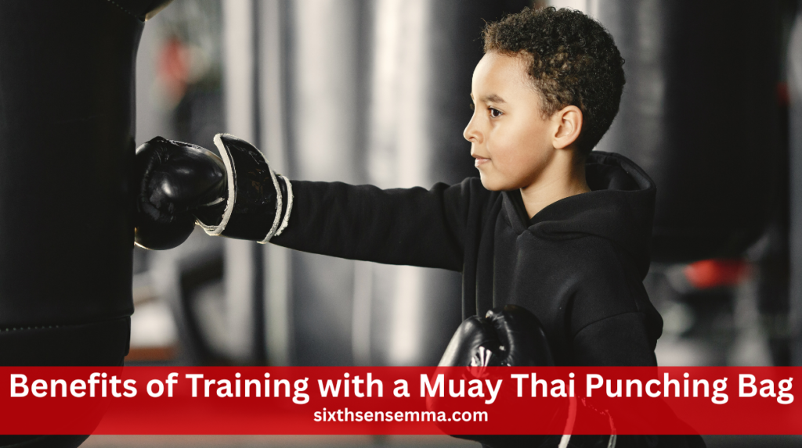
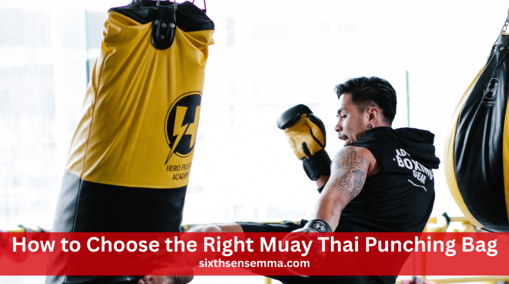
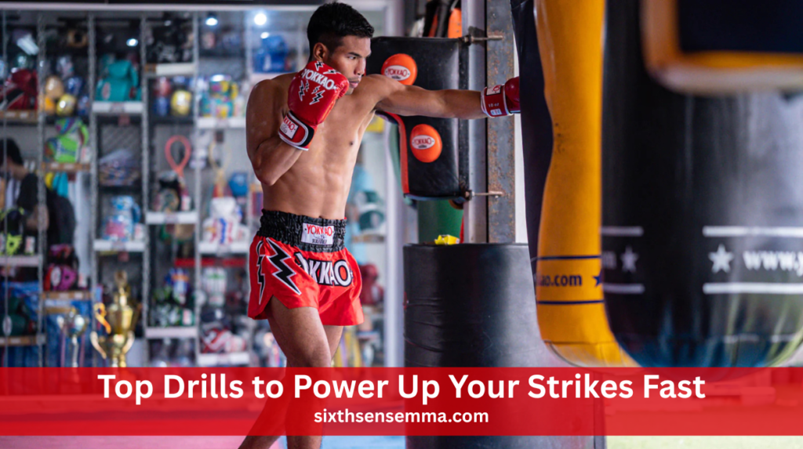

Muay Thai Punching Bag: Power Up Your Strikes Fast

A Muay Thai punching bag is a long, heavy training bag designed to improve striking in Muay Thai. Unlike regular boxing bags, it’s built for full-body techniques like punches, kicks, elbows, and knees. Its extra length allows for low kicks and knee strikes, making it ideal for realistic fight practice and developing both power and technique in your training.
What Is a Muay Thai Punching Bag?
A Muay Thai punching bag is designed to help fighters train for real fights. It’s made longer so you can practice both low and high kicks, knees, and elbows. Compared to a regular boxing bag, it covers more of your striking range.
Main Things That Make Muay Thai Punching Bags Special
Muay Thai punching bags are different from regular boxing bags because they’re made for full-body training. They are longer, heavier, and built with strong materials to handle powerful kicks, elbows, knees, and punches.
Extra Length for Full-Body Strikes
Muay Thai punching bags are longer than regular bags, usually around 6 feet. This length is important for practicing low kicks, teeps (push kicks), and knees. With more space to strike, you can train like in a real fight. The full-body coverage helps fighters develop timing and accuracy from head to toe.
Heaviness for Power Training
These bags are designed to be heavy, which makes them perfect for building power. The weight keeps the bag from swinging too much, letting you hit hard without losing control. This helps you work on your strength and balance while throwing punches, elbows, and kicks. It’s excellent for muscle conditioning and strong, solid strikes.
Durable Material for Long-Term Use
Muay Thai punching bags are made from strong materials like synthetic leather, vinyl, or reinforced canvas. These materials resist tearing and last through years of hard training. Whether used indoors or in a gym, they hold up well against thousands of powerful kicks and punches. This makes them a smart investment for any serious fighter.
Also Read Our Article: Martial Arts Classes: How to Choose the Right One
Benefits of Training with a Muay Thai Punching Bag
Training with a Muay Thai punching bag helps you become a better fighter in many ways. It lets you work on your technique, build real power, and improve your stamina. You can throw all types of strikes—punches, kicks, elbows, and knees—with full force. It also helps condition your body and toughen your shins for real fights. This kind of training prepares you both mentally and physically for actual sparring or compet
Perfecting Technique
Training on a Muay Thai punching bag helps improve your form. You can practice strikes like jabs, hooks, knees, and roundhouse kicks with precision. It gives you real feedback when your strikes are off. Over time, your technique becomes sharper and more effective, making your skills fight-ready and improving your timing and angles.
Building Power and Strength
Each strike on the bag builds power. The heavy bag strengthens your arms, legs, and core muscles. Hitting it with full force also trains your body to deliver impact like in a real match. As your strength increases, you’ll notice harder hits, better resistance, and improved confidence when facing opponents in training or fights.
Improving Cardio and Endurance
Working out on a Muay Thai punching bag boosts your heart rate quickly. When you move continuously with combinations of punches and kicks, your endurance improves. These intense sessions mimic the pace of real fights and help you build the stamina needed to last through multiple rounds without getting tired too quickly.
Shin and Body Conditioning
One key part of Muay Thai is body hardening. Striking the heavy bag again and again helps toughen your shins and body. Over time, this reduces pain and builds resistance to impact. Your bones adapt and become stronger, preparing you for real competition where leg and body shots are common and hard-hitting.
Different Types of Muay Thai Punching Bags
There are several types of Muay Thai punching bags, each designed for a different style of training. Choosing the right one depends on what you want to focus on—like kicks, power, or clinch work. Here’s a breakdown of the most common types you’ll see in gyms or can use at home.
Banana Bags
Banana bags are long and narrow, often reaching from high up to just above the floor. This design allows fighters to throw low kicks, body shots, and even high strikes easily. You can practice full-body techniques using these bags. Their length also helps in building rhythm, balance, and flow in your combinations.
Heavy Bags
Compared to banana bags, heavy bags are thicker and shorter. They weigh more, which means they swing less when hit. This makes them perfect for training powerful punches, elbows, and kicks. The added resistance helps build strength and improves your striking power. They’re ideal if your goal is to hit harder and build muscle.
Tear Drop Bags
Tear drop bags have a round, bulb-like bottom that mimics an opponent’s body. They are perfect for training knees and clinch work. You can also use them for uppercuts and close-range punches. Their unique shape makes them easier to grab and control, helping you improve grappling techniques used in Muay Thai.
Hanging vs. Free-Standing Muay Thai Bags
Hanging bags are better for real fight training. They allow natural movement and swing, just like a real opponent. But you’ll need space and a strong frame or Muay Thai punching bag stand.
Free-standing bags are easier to set up at home. They don’t need a stand or hook and are easy to move. However, they don’t swing naturally like hanging ones.
Pros and Cons of Hanging Muay Thai Bags
Hanging bags are great for realistic training because they swing naturally, helping you practice timing, distance, and movement. They are perfect for long-term use and full-power punches. However, they need a strong ceiling mount or stand, which isn’t always easy to install at home. They also require more space to move around safely.
Pros and Cons of Free-Standing Muay Thai Bags
Free-standing bags are easy to set up and move around, making them perfect for small spaces or home gyms. They don’t need drilling or mounts. But they’re often lighter, so they may tip or slide with strong kicks. They’re good for technique and cardio but not always ideal for heavy power training.
Best Choice for Home Training
For home use, free-standing bags are often the better choice. They’re easy to set up, don’t damage walls or ceilings, and can be moved when needed. If you live in an apartment or small space, they’re very practical. Just make sure to choose a heavier base model to handle kicks and strikes.
How to Choose the Right Muay Thai Punching Bag

Think about your training goals. Which would you prefer: technique or power? Choose a heavy banana bag if you want to gain power. If you want to work on clinch, choose a tear drop bag.Consider your space. For home use, free-standing bags might be better. For gyms, hanging bags are ideal.Also, check the quality of the material. Good brands use strong, long-lasting fabrics that can take years of hard training.
Maintenance Tips for Longevity
To keep your Muay Thai punching bag in good shape, wipe it down after each workout to remove sweat and dust. Over time, you might need to refill the bag or adjust its weight—using shredded fabric or rubber works well for this. Always store your bag in a dry, shaded place to avoid damage from moisture or sunlight.
Top Brands for Muay Thai Punching Bags
When buying a Muay Thai punching bag, the brand matters. Trusted brands offer better quality, stronger materials, and longer-lasting gear. Good brands are tested by fighters, so you know they can handle strong punches, kicks, and daily use. This section will guide you through some of the best brands for every level of training.
Fairtex
Fairtex is one of the top names in Muay Thai gear. Their punching bags are well-built, long-lasting, and used by professionals around the world. Made with strong materials and solid stitching, Fairtex bags are perfect for full-power training and daily gym use. Fairtex is trusted by many boxers for their at-home and gym exercises.
Twins Special
Twins Special is another trusted brand in the Muay Thai world. Their bags are great for hard training and are known for strength and comfort. Fighters love how balanced and strong their bags feel. Whether you’re a beginner or pro, Twins Special punching bags can handle heavy punches, kicks, elbows, and knees with ease.
Yokkao
Yokkao bags are both tough and stylish. They are made with strong materials and are used by many top-level Muay Thai fighters. These bags don’t just look good—they perform well under heavy training. If you want a punching bag that stands out and performs like a pro tool, Yokkao is a top choice.
Outslayer
Outslayer bags are heavy-duty and made to last. They’re built for powerful strikes and are great for serious fighters who train often. These bags don’t swing too much and offer good resistance, which is helpful for strength and power workouts. Outslayer also offers lifetime warranties on many of their bags, showing their quality.
Ringside
Ringside is a more budget-friendly option but still delivers good quality. Their bags are perfect for beginners or anyone training at home. While not as heavy as some high-end brands, Ringside bags offer enough resistance for basic Muay Thai workouts. It’s a great starting point if you’re new to striking or on a budget.
Alao Read Our Article: Japanese Martial Arts Sign: Exploring the Meaning Behind Traditional Symbols
Top Drills to Power Up Your Strikes Fast

These drills help improve your Muay Thai skills by building speed, power, and stamina. Doing specific workouts on the punching bag sharpens your strikes and conditions your body like a real fight. These training rounds are simple yet intense—perfect for beginners and advanced fighters looking to boost performance quickly.
3-Minute Power Rounds with Rest-Pause
Hit the bag with full power for 30 seconds, then rest for 10 seconds. Repeat this pattern until the 3 minutes are up. This drill builds endurance and striking strength. It’s a great way to train like real rounds in a fight and helps your body recover faster between bursts of action.
Rapid Elbow and Knee Combo Drill
Throw elbows and knees one after the other as fast as you can for one full minute. This drill is perfect for improving your close-range attack. It sharpens your technique and builds rhythm in tight spaces. Great for simulating clinch situations and adding explosive power to elbows and knees.
Low Kick Repetition Drill
Throw 20 low kicks with one leg, then switch to the other. Do this for 3 sets. This builds strong shins, improves leg balance, and strengthens your core. It also helps with muscle memory, so your kicks become faster and more natural in real fights. Don’t forget to stay balanced and breathe.
Heavy Bag Power Punch Drill
Use only punches in this drill—jabs, crosses, hooks, and uppercuts. Focus on delivering strong, fast hits for 2-3 minutes straight. This helps you build upper body strength, speed, and punching accuracy. Make sure to keep your stance strong and mix your punches for a full-body workout.
Common Mistakes to Avoid
Many beginners make common mistakes that slow progress or cause injury. Learning what to avoid helps you train smarter and get better results. This section explains those key mistakes so you can improve faster, stay safe, and develop good habits from day one of your Muay Thai journey.
Ignoring Footwork
Footwork is the foundation of Muay Thai. If you stand still or step wrong, your strikes lose power and you become an easy target. Always move with purpose, stay light on your feet, and keep your stance solid. Good footwork helps with both offense and defense.
Poor Punching Form
Throwing punches the wrong way can hurt your wrist or shoulder. Make sure your hands are up, your fists are tight, and your form is correct. Practice slowly to build good habits. Proper form gives more power to your punches and helps prevent injury during training.
Overusing One Technique
Relying only on kicks or punches makes your style easy to read. A good fighter mixes up attacks—using elbows, knees, kicks, and punches. This keeps your opponent guessing and makes your game stronger. Train all techniques equally to become a complete Muay Thai fighter.
Conclusion
A Muay Thai punching bag is one of the best tools for serious training. Its size and weight let you practice every strike—punches, elbows, kicks, and knees—with real force. It helps improve technique, power, stamina, and even mental focus. Whether you’re a beginner or advanced, using the right bag can level up your skills and keep you fight-ready. It’s a smart investment for long-term Muay Thai growth.
FAQ’s
A boxing bag is usually shorter and designed mainly for punches. On the other hand, a Muay Thai bag is longer, allowing low kicks, knees, elbows, and punches. It supports full-body striking. The weight and build also make Muay Thai bags better for power training.
Kicks generally generate more power because legs are stronger than arms. A well-placed kick can hit with much more force than a punch. However, punches are faster and easier to control.
It depends on the fighter’s skill level and the rules of the match. Boxers are quick with their hands, but Muay Thai fighters use elbows, knees, and kicks. In close-range fights, Muay Thai has an edge. Both styles can win with the right strategy.
Muay Thai fighters train with high intensity almost daily. They hit bags, pads, and spar to build strength and endurance. Their bodies are conditioned through repeated strikes and drills. Discipline and hard work make them powerful and tough.
It’s true that punching a punching bag helps build muscle. It strengthens your legs, arms, shoulders, and core. While it may not bulk you up like weightlifting, it builds functional strength and improves conditioning. Over time, it gives visible muscle definition.
If you train without proper form, you could develop bad habits. It may cause wrist, shoulder, or joint strain. Also, you don’t learn timing or movement like in sparring. It’s effective, but should be balanced with technique drills and live practice.
Punching without gloves can damage your knuckles and wrists. Repeated impact may lead to swelling, cuts, or injury. Always wear hand wraps or gloves to protect your hands. Good protection ensures long-term safety and performance.
Two years of consistent Muay Thai training is enough to learn solid basics. You’ll build good technique, strength, and fight awareness. It won’t make you a pro, but it lays a strong foundation. Continued training will take you even further.
There is no perfect body type for Muay Thai. Lean and athletic bodies may move faster, but strength and skill matter more. Anyone can excel with discipline and practice. Muay Thai is made for all shapes willing to work hard.
Muay Thai helps you build lean muscle and burn fat. It tones your body rather than adding bulk. You’ll notice stronger legs, arms, and core over time. While it may not make you bigger like gym workouts, it boosts fitness and definition.
Train with us in Coppell
The first class is free. Shorts, a t-shirt and a water bottle. We lend the rest.
Book a free class